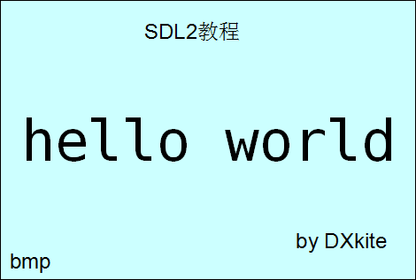
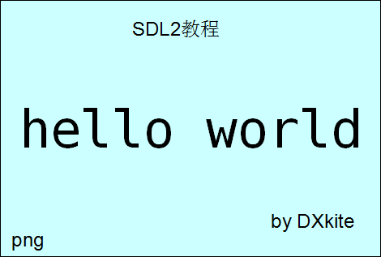
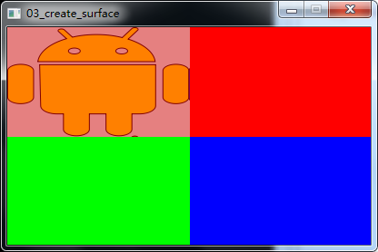
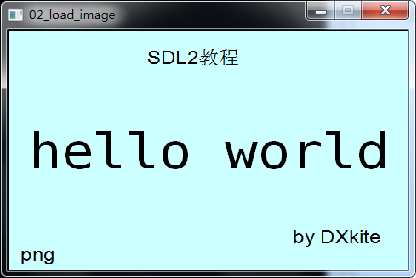
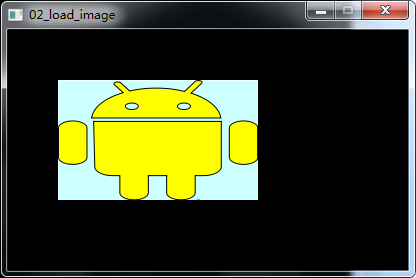

第三课 创建图片表面
本课，我们来加载图片，首先在工作目录准备两张图片,一张是BMP格式图片，一张是比较常见的PNG图片
我们现在加载BMP格式的图片，拿出第一课我们写的源代码，添加文件加载部分，在此之前，先添加一个全局变量Suface用来储存加载的图片
 hello.bmp |
 hello.png |
// 图片表面 SDL_Surface *Surface = NULL;
然后接着来写加载图片部分：
int LoadSurface()
{
//加载图片 BMP格式
Surface = SDL_LoadBMP("hello.bmp");
if (Surface == NULL)
return -1;
return 0;
}
这里用到了函数SDL_LoadBMP这个函数接受一个路径参数，返回一个SDL_Surface的指针
看看在主函数中如何把Surface应用到上节课绑定了窗口的表面WindowScreen上
//粘贴表面 SDL_BlitScaled(Surface, NULL, WindowScreen, NULL);
函数SDL_BlitScaled接受四个参数，第一个参数是源表面，第三个参数是目的表面，函数的作用是将源表面绘制到目的表面上，第二个参数指定了源表面绘制到目的表面的区域，接受一个SDL_Rect指针，第四个参数指定了源表面绘制到目的表面的区域，同样接受一个SDL_Rect的指针，在此，两个设置为NULL表示默认全部都绘制和绘制目的表面的全部区域，刷新表面后，看效果：
 hello.bmp 加载截图 |
 hello.png 加载截图 |
clip.png |
 代码运行效果图 |
回到顶部